Where to find it: back office › Task center management › Mission Settings
| Term | Meaning |
|---|---|
| Period | The time until a mission starts again. Daily = 1 day. Weekly = 1 week. Permanent and Limited Time missions have only 1 period. |
| Reset | A new period starts. Progress goes back to 0, and players can do the mission again. Daily = every day at 00:00. Weekly = every Monday at 00:00. |
| Greyed out | The field is grey. You can't click it or type in it. |
| Quota | The most players who can get a reward. |
| Full | No places are left. Players who did not get the reward yet can't get it now. |
| Type | What it is | Example |
|---|---|---|
| Basic Mission | Complete 1 condition, get 1 reward | Bet ₱200 → 100 Points |
| Mission Group | Many sub missions on one card. Each one gives its own reward. Finish a set number of them to get an Extra Reward | 3 sub missions. Finish any 2 to get 100 Bonus more |
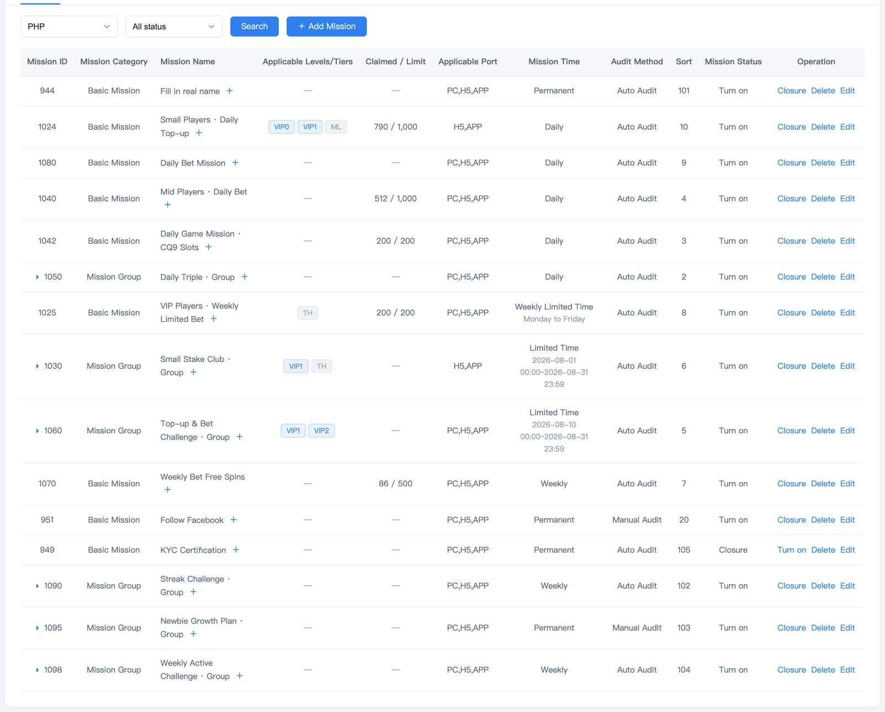
Choose "Basic Mission" in Mission Category. Type the Mission Name. Players see only 1 line, so a long name ends with "…".
Game Page Display: to also show the mission on a game page (Sports, Slots, Live…), choose that page. If not, choose "None".
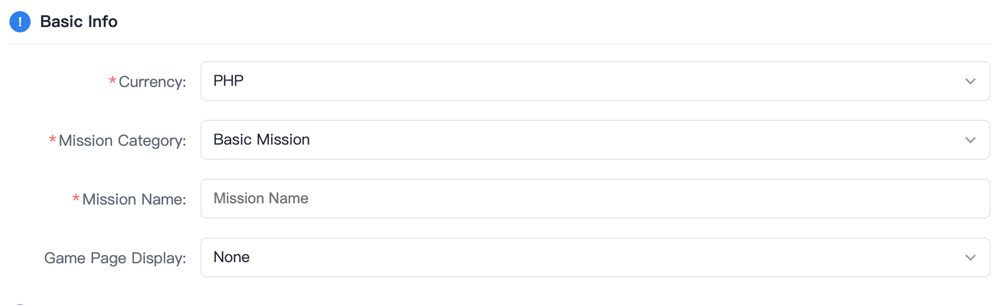
Mission Condition: first choose the type, then the condition. Recharge and Bet need an amount. It must be a whole number above 0.
Forward Address: the page players go to when they tap "To do", "Top Up" or "Bet Now".
Mission Reward: Bonus, Points, Free Spin, Free Bet, Coupon or Golden Draw Ticket. For Free Spin, Free Bet and Coupon, also type a "Value". Players see it as ₱Value.
Quota Limit: the most players who can get the reward in each period. First come, first served. Blank or 0 = no limit.
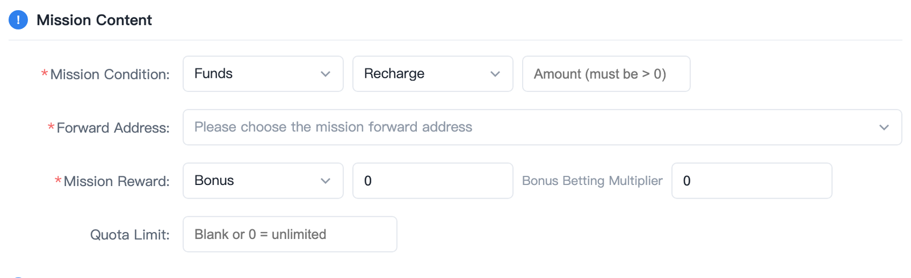
VIP Level and User Label: if you tick nothing, everyone can join. If you tick some, players who don't match can't see the mission.
If you tick more than 1 label, players need all of them. Example: tick TH and ML, and players need both.
Requirements for participating in the mission (KYC, total recharge, total valid bet): only work when ticked. Players who don't meet them can still see the mission. The button tells them what to do first.
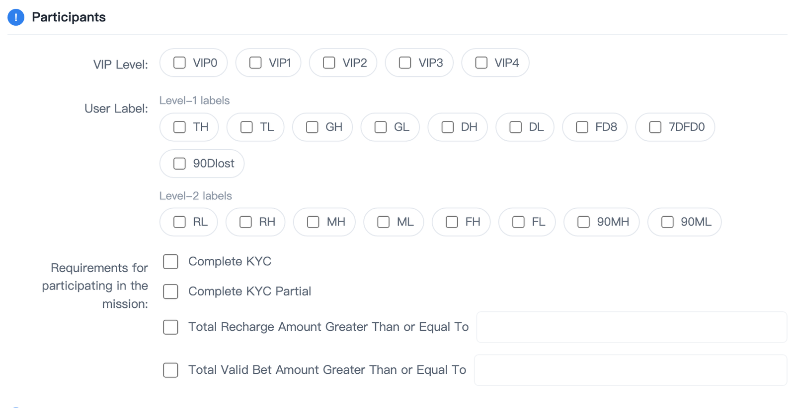
Mission Time: Permanent, Daily, Weekly, Limited Time or Weekly Limited Time. Each condition only allows some of them. The others are grey (see the red text).
Audit Method: Auto Audit = the mission is done when the player reaches the goal. Manual Audit = the mission is done only after you approve it in "Mission Audit Record".
Reward Distribution Method: Auto Distribution = the reward goes to the player right away. User Self-Claim = the player must tap "Receive".
Reward Expiry Time: only shows for User Self-Claim with Daily or Limited Time. If you type N days, players can still get missed rewards in "Reward Retrieval" for N days after the reset or end.
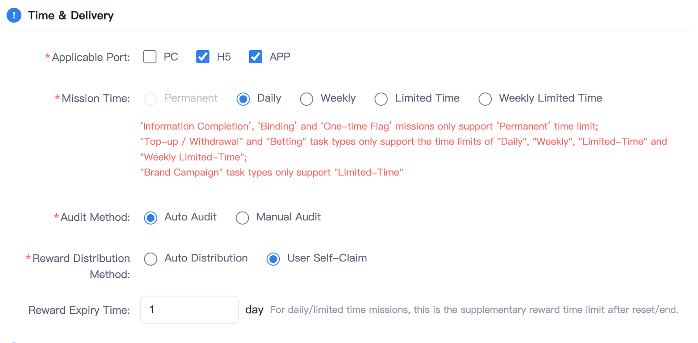
Sort: a smaller number shows higher on the player's page. Missions that are done or Full move to the bottom by themselves.
Display Mission Description: choose "Yes" to show ⓘ next to the title. Players tap it to read the Mission Description.
Mission Status: choose "Turn on" so players can see it.
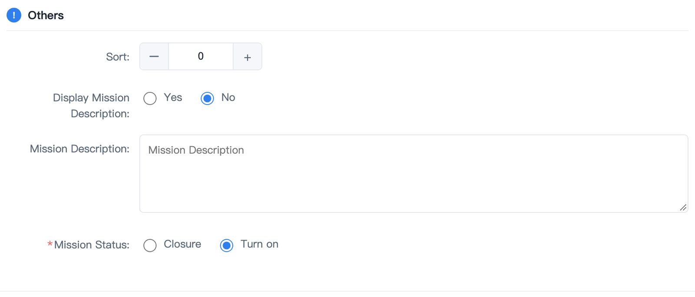
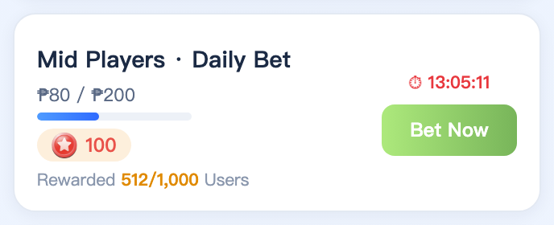
The steps are the same as a Basic Mission, but steps 1 and 2 are a bit different. When you choose "Mission Group", "Game Page Display" goes away, and Mission Content looks like this.
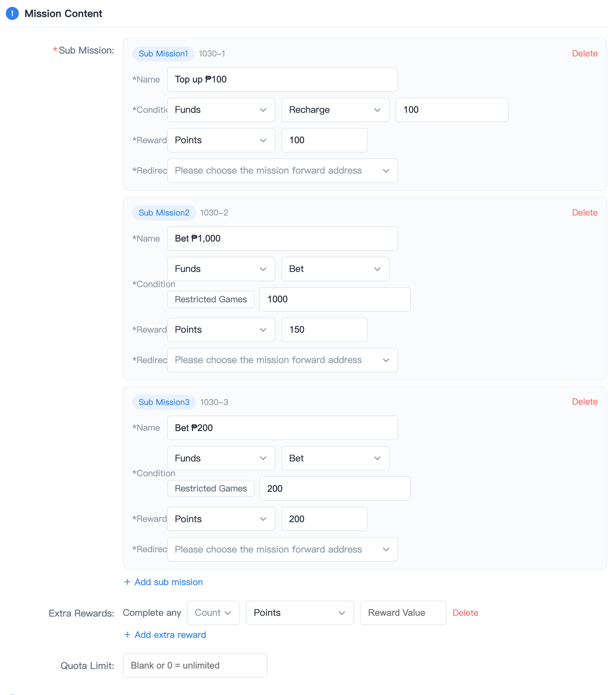
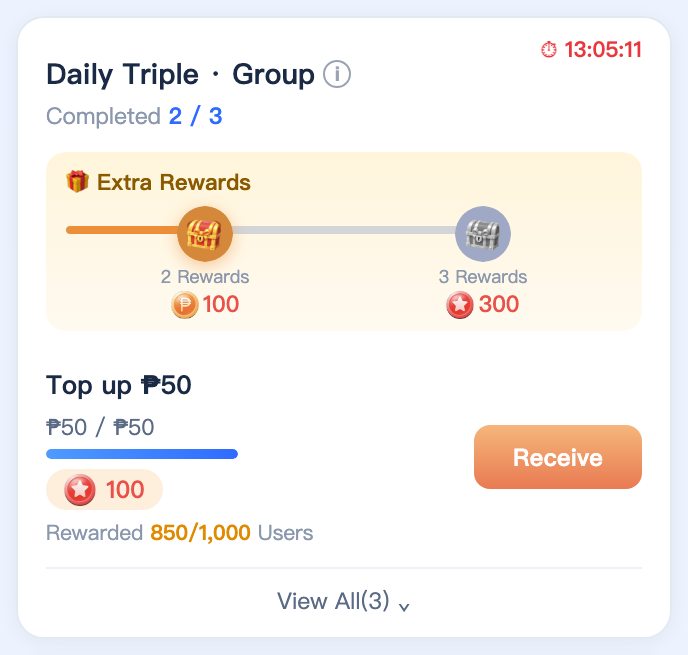
| Chest | Meaning |
|---|---|
| Grey | Not there yet |
| Orange, moving | Ready. Tap the chest to get it. (With Auto Distribution you won't see this. It goes straight to a tick.) |
| Green tick | Already got it |
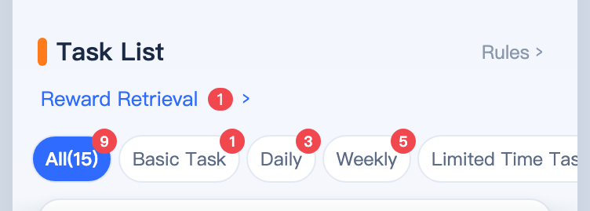
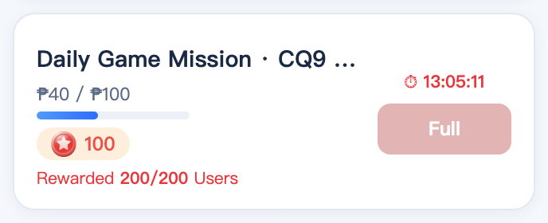
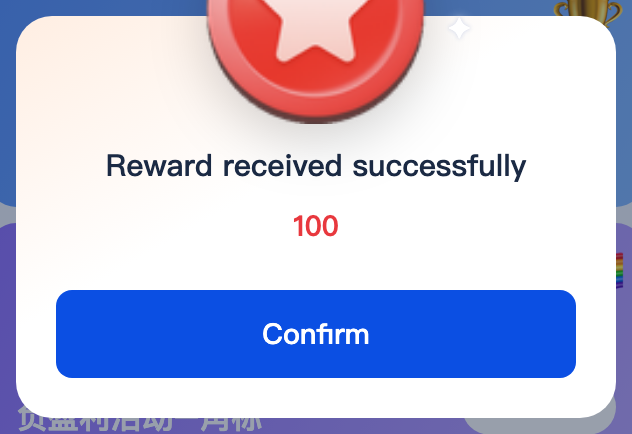
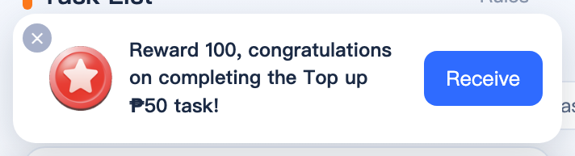
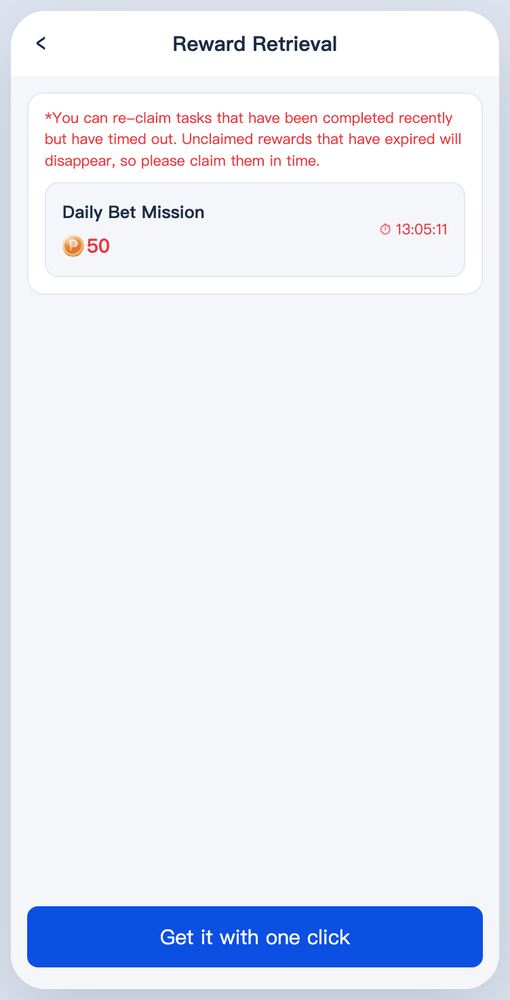
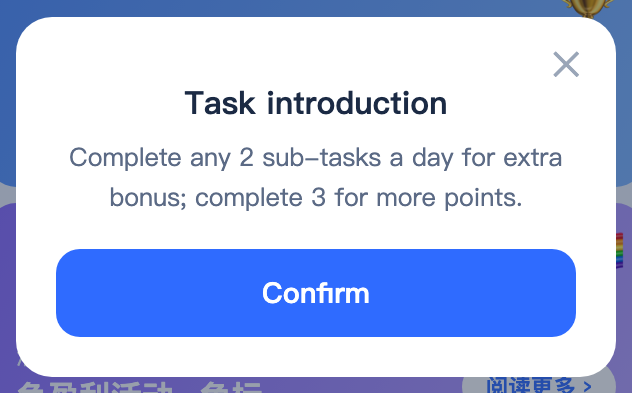
| Mission Time | Tab players see |
|---|---|
| Permanent | Basic Task |
| Daily / Weekly | Daily / Weekly |
| Limited Time, Weekly Limited Time | Limited Time Task |
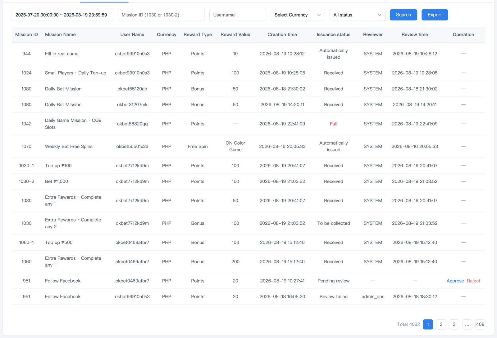
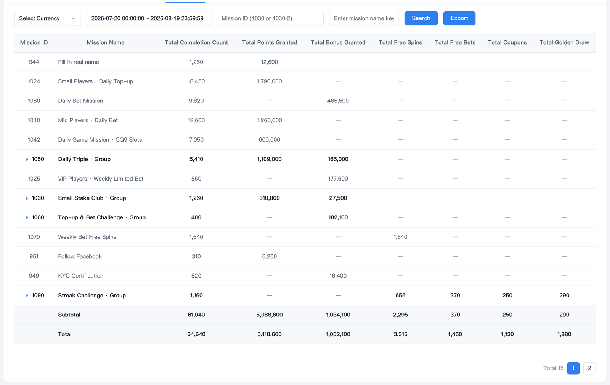